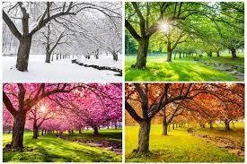

About the Earth's Seasons
A season is a period of the year that is distinguished by special climate conditions. The four seasons—spring, summer, fall, and winter—follow one another regularly. Each has its own light, temperature, and weather patterns that repeat yearly. In the Northern Hemisphere, winter generally begins on December 21 or 22. This is the winter solstice, the day of the year with the shortest period of daylight. Summer begins on June 20 or 21, the summer solstice, which has the most daylight of any day in the year. Spring and fall, or autumn, begin on equinoxes, days that have equal amounts of daylight and darkness. The vernal, or spring, equinox falls on March 20 or 21, and the autumnal equinox is on September 22 or 23. The seasons in the Northern Hemisphere are the opposite of those in the Southern Hemisphere. This means that in Argentina and Australia, winter begins in June. The winter solstice in the Southern Hemisphere is June 20 or 21, while the summer solstice, the longest day of the year, is December 21 or 22.
Seasons occur because Earth is tilted on its axis relative to the orbital plane, the invisible, flat disc where most objects in the solar system orbit the sun. Earth’s axis is an invisible line that runs through its center, from pole to pole. Earth rotates around its axis. In June, when the Northern Hemisphere is tilted toward the sun, the sun’s rays hit it for a greater part of the day than in winter. This means it gets more hours of daylight. In December, when the Northern Hemisphere is tilted away from the sun, with fewer hours of daylight. Seasons have an enormous influence on vegetation and plant growth. Winter typically has cold weather, little daylight, and limited plant growth. In spring, plants sprout, tree leaves unfurl, and flowers blossom. Summer is the warmest time of the year and has the most daylight, so plants grow quickly. In autumn, temperatures drop, and many trees lose their leaves.
The four-season year is typical only in the mid-latitudes. The mid-latitudes are places that are neither near the poles nor near the Equator. The farther north you go, the bigger the differences in the seasons. Helsinki, Finland, sees 18.5 hours of daylight in the middle of June. In mid-December, however, it is light for less than 6 hours. Athens, Greece, in southern Europe, has a smaller variation. It has 14.5 hours of daylight in June and 9.5 hours in December.